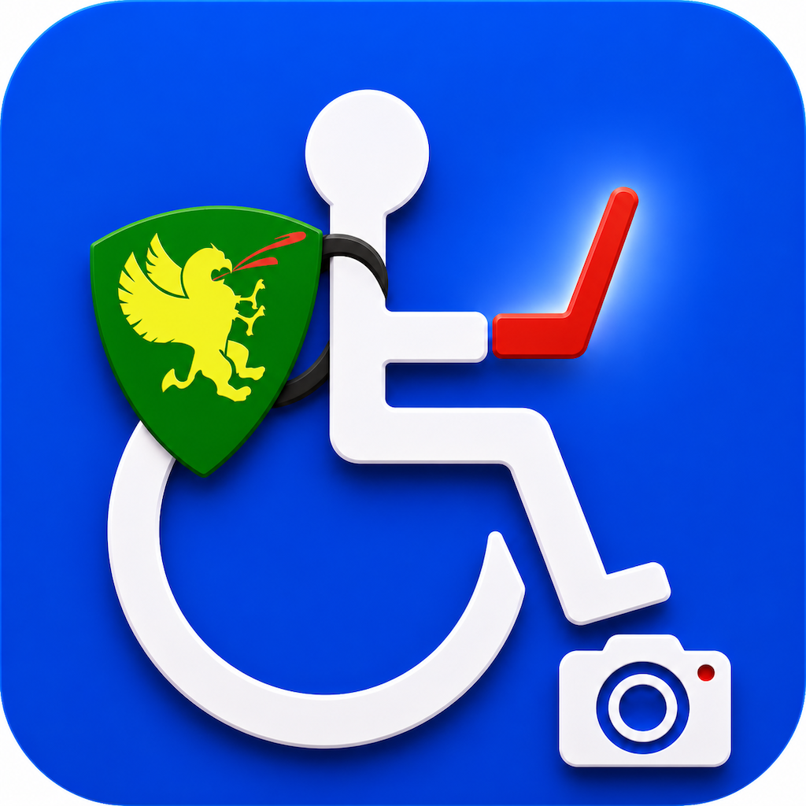
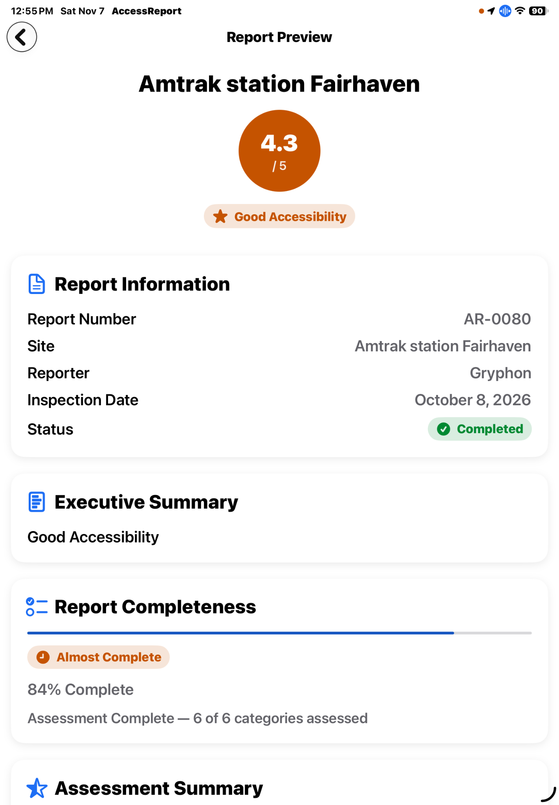
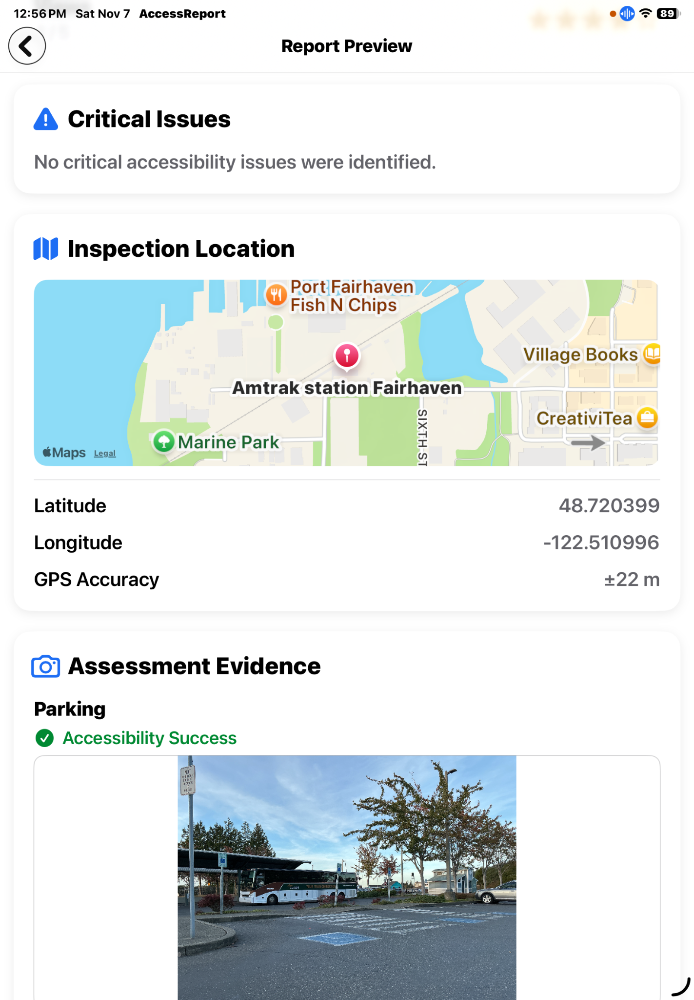
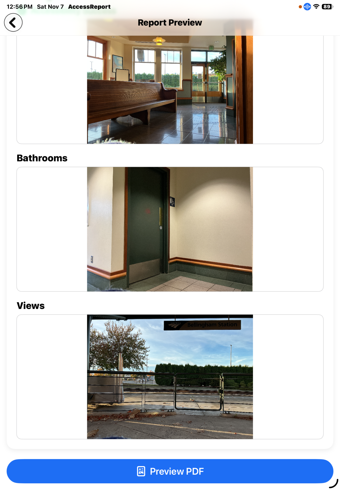
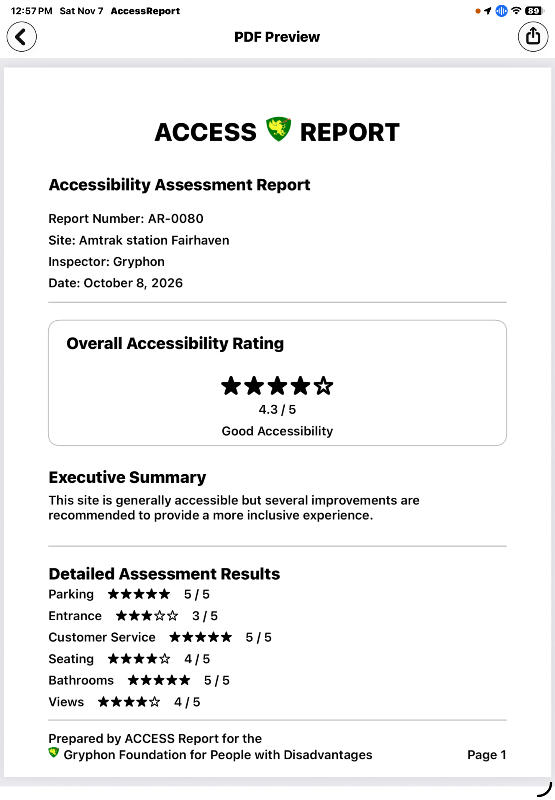
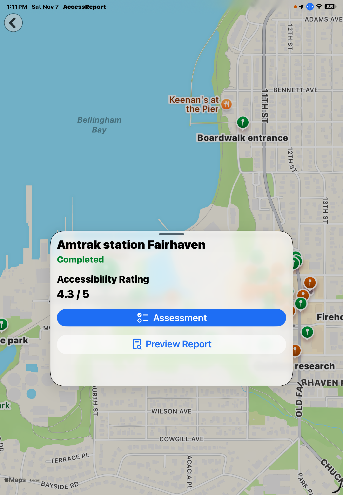

1. Create a report
Start a location-specific record with an automatically assigned report identifier, location, reporter, date, status, and notes.

A structured field-research application for documenting accessibility at real-world locations through predefined assessment categories, ratings, observations, photographs, geographic information, and generated reports.
Developed · Not yet publishedThe Access Report application grew from Gryphon Foundation's broader work in assistive technology and accessibility. It provides a way to record what a researcher encounters at a location, preserve supporting evidence, and organize findings into a report. The application is distinct from the ACCESS Reports video documentary series.
Its documented methodology uses six assessment categories: Parking, Entrance, Customer Service, Seating, Bathrooms, and Views. Each category has predefined questions and rating criteria. The five-point scale describes the accessibility experience; it is not a legal-compliance certification.
Start a location-specific record with an automatically assigned report identifier, location, reporter, date, status, and notes.
Use the predefined questions and rating criteria to document different aspects of the visitor experience.
Attach photographs and written observations to support the assessment.
Document recommendations that may help make a location more accessible.
Use geographic information and interactive location pins to open an assessment, begin work, or preview what remains to be assessed.
Preview and generate a PDF report that brings together the overall rating, category results, location details, observations, photographs, and recommendations.
These are screenshots of the developed iPad application.





The ACCESS Report Scientific Field Research Manual documents the assessment protocol, category structure, rating scale, evidence practices, and field workflow. A completed Amtrak Station Fairhaven assessment illustrates how category ratings, observations, photographs, location information, and recommendations are assembled into a nine-page PDF report.
While developing Access Report, Gryphon Foundation recognized that location is also central to social participation. For a person who uses a wheelchair, the accessibility of a meeting place can determine whether a first date is practical. Other people may prefer quiet, familiar, or less stimulating environments.
That insight helped inspire Dating Research: a separate application exploring location-aware discovery, individual meeting preferences, and the development of relationships. The two applications have distinct purposes, but share an interest in how people experience and participate in real-world places.